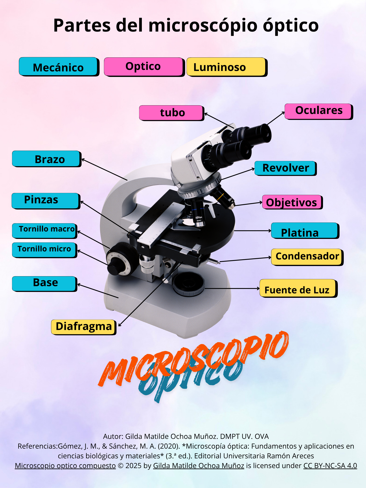

Objetivo
🔍Enunciar los sistemas del microscopio óptico, mecánico y luminoso con la finalidad de identificar sus partes y funciones a través de una infografía.

Actividad 1
Ordenar las partes del microscopio según su sistema
Instrucciones:
Observa la infografía del microscopio que se te proporcionó.
Accede al ejercicio interactivo en Genially, donde encontrarás una lista de partes del microscopio.
Tu tarea es arrastrar cada parte y colocarla en la columna del sistema correcto:
Mecánico
Óptico
Luminoso
Revisa la infografía si tienes dudas y asegúrate de colocar todas las partes correctamente.
Al finalizar, verifica tus respuestas en el Genially y corrige cualquier error.
Liga:
https://view.genially.com/691821e1e9e4df7b9a3bc724/interactive-content-partes-del-microscopio